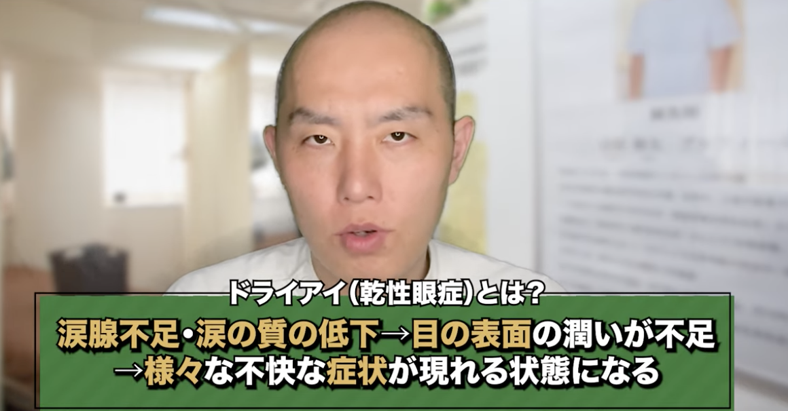
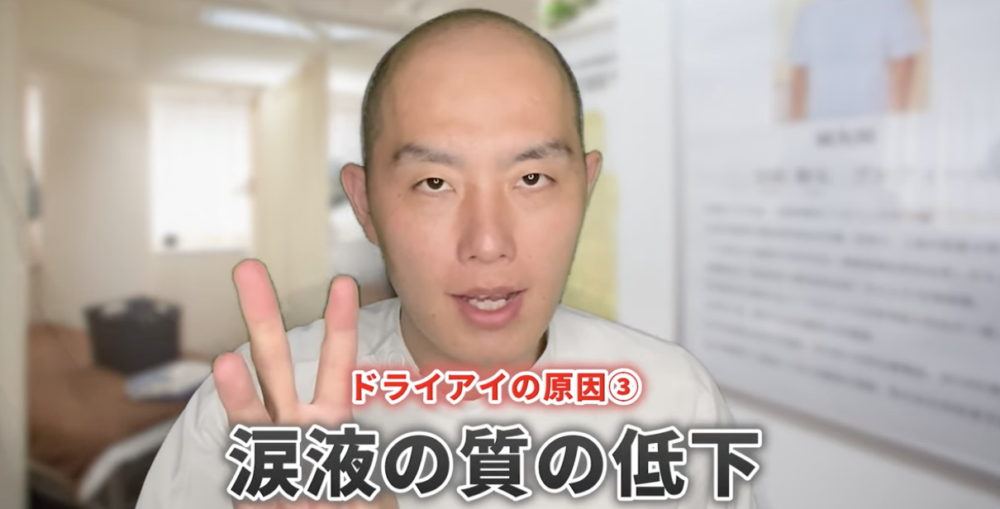
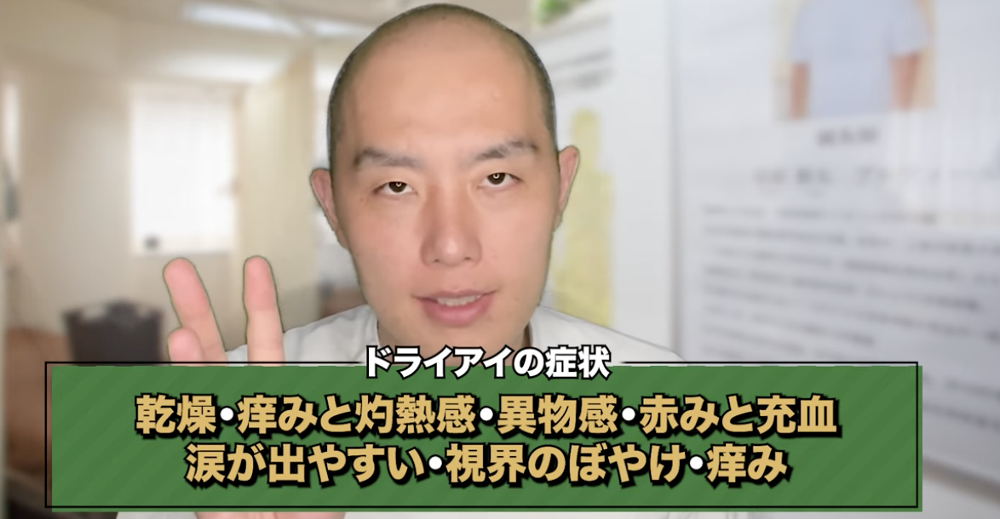
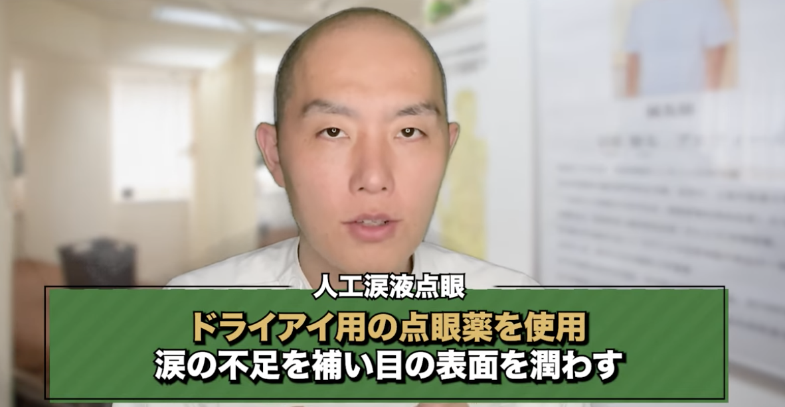
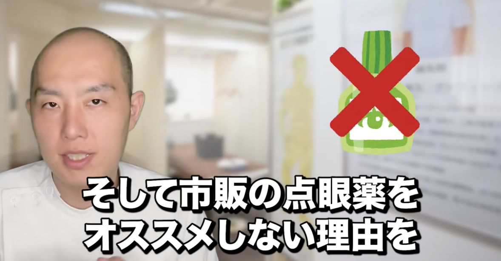
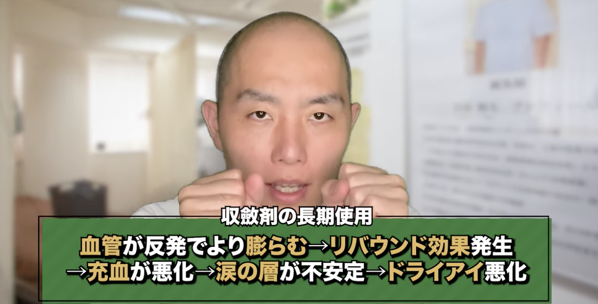

ドライアイの鍼灸
涙の量や質の低下で目の表面が乾く状態です。涙腺・筋緊張型と脳過敏型を見極め、副交感神経と目周囲の循環を整えます。
まず知っておきたい要点と施術方針
ドライアイは、加齢や自己免疫疾患などによる「涙の不足」、パソコン・スマホによるまばたき減少や空調・コンタクトによる「涙の蒸発」、水分・油分・粘液のバランスが崩れる「涙の質の低下」の3つが主因です。また降圧薬などの内服薬や、防腐剤・血管収縮剤を含む市販点眼薬の連用が悪化を招くこともあります。当院では涙腺や筋肉の凝りによるタイプと、脳過敏によるタイプに分けて見極めています。（公式解説）
このようなお悩みはありませんか？
- ✓目が乾いてゴロゴロした異物感やかゆみがある
- ✓視力は良いはずなのに視界がかすんで見えにくい
- ✓パソコンやスマホ作業、空調の効いた部屋で悪化する
- ✓目を閉じて休めても目の疲れや不快感が抜けない
当院の施術アプローチ
院長YouTube解説・関連動画
ドライアイは涙の病気

ドライアイは、涙の病気です。
涙は、目を守るために絶対に必要なものです。ドライアイになると、涙の量が減ったり涙の質のバランスが崩れたりして、涙が均等に行きわたらなくなり目の表面に傷ができたり疲れ目などの症状が出てきます。
高齢化やエアコンの使用、パソコンやスマートフォンの使用、コンタクトレンズの使用など、生活環境の変化によってドライアイの割合も増えています。最近行われた日本人の疫学調査では、40歳以上の成人の17.4%がドライアイであったということもわかっています。
涙は非常に重要な役割をしており、ドライアイとも大きく関係しています。涙の働きは、外から入ってくる異物や乾燥などから目を守る働きと、角膜に栄養や酸素を届ける働きです。
瞬きをすることによって涙は分泌され、一般的に瞬きの回数が少なくなると必要な量の涙が出てきません。瞬きも涙も目に対して非常に重要なのです。
ドライアイは目が乾燥する非常に多い病気です。O L さんやP C作業の多い人、YouTubeばかり見ている人などに起こりやすいですが、ドライアイの症状に市販の点眼薬を使うのは逆効果です。
これは最近高須クリニックの高須先生も言っていたことで、市販の点眼薬はドライアイを悪化させるのです。
ドライアイ（乾性眼症）は涙腺不足、涙の質の低下によって目の表面が十分潤わず様々な不快な症状を引き起こす状態です。この状態は目の健康、視力にも影響します。
ドライアイの原因は、涙が減り乾燥すること

ドライアイの主な原因は、年齢を重ねるにつれて涙の分泌量が減ったり質が下がったりすること、パソコンやスマートフォンなどを長い時間使うことによってまばたきが減ること、コンタクトレンズを使うこと、空調で部屋の中が乾燥することです。
血圧を下げる薬や向精神薬、抗がん剤などの薬の作用によって涙の分泌量が減り、ドライアイになることもあります。点眼薬の中には涙の安定性を不安定にさせてしまう成分の入っている点眼薬があり、点眼薬がドライアイを引き起こす原因となることもあります。
①涙腺の不足
涙の生成が不十分で目の表面を潤わすための涙が不足することで、乾燥が生じます。加齢や特定のシェーグレン病という自己免疫疾患などで見られます。
②涙の蒸発の増加
パソコンやスマホの長期使用によって瞬きの減少、エアコンや暖房の使用によって乾燥した環境が原因で起こります。
③涙液の質の低下
涙には水分、油分、粘液が含まれており、バランスよく分泌されることによって目が潤されています。このバランスが崩れることで涙が十分に効果を発揮できなくなります。
年齢の増加に伴い、涙液の分泌量が減少する傾向があります。特に40歳以上の中高年層では、涙液の蒸発が進み、ドライアイのリスクが高まります。加齢によって涙腺の機能が低下し、涙の質も変化することが原因の一つとして考えられます。
・環境要因
ドライアイの原因の一つに、外部環境が関与しています。乾燥した空気や風、加湿器の不適切な使用、エアコンの強い風などが、涙液の蒸発を促進しドライアイを引き起こすことがあります。特に冬季や乾燥した気候の地域でドライアイの発症が増加する傾向があります。
・デバイスの使用
近年、スマートフォンやコンピュータなどのデバイスの使用が増えています。長時間の画面を見続けることは、まばたき回数が減少し、涙液の蒸発を促進する原因となります。このため、スマートフォンやコンピュータの過度な使用がドライアイのリスクを高めることが考えられます。
・目の使用頻度
目の使用頻度が低い場合も、ドライアイの原因となることがあります。例えば、長時間の睡眠や目を凝視する作業のためにまばたきを控えてしまうと、涙液の分泌が十分に行われず、ドライアイを引き起こす可能性があります。
・他の眼の病気
他の眼の病気がドライアイを誘発することがあります。例えば、結膜炎や角膜炎などの炎症が、涙液の質や量を悪化させることがあります。また、アレルギー性結膜炎や眼精疲労なども、ドライアイを引き起こす要因となることがあります。
・ホルモンの変化
ホルモンの変化も、ドライアイの原因となることがあります。特に女性は、妊娠、出産、更年期などのホルモンの変化によって涙液の分泌量が変動することがあります。
・病気や薬物
一部の病気や薬物も、ドライアイの原因となることがあります。例えば、自己免疫の病気や糖尿病などの慢性的な病気は、涙液の分泌量や質に影響を与えることがあります。また、抗うつ薬や抗ヒスタミン薬などの一部の薬物もドライアイのリスクを増加させることがあります。
ドライアイになると目に様々な症状が現れる

ドライアイの主な症状は、乾燥、かゆみと灼熱感、異物感、赤みと充血、涙が出やすい、歯科医のぼやけです。
ドライアイは目が乾く、目が疲れるのような症状だけでなく、見え方にも影響があることもあります。視力が良くてもかすんで見えたりするのです。
目が乾燥した状態の場合、目の表面に傷がつきやすくなり、放っておくと目の表面だけでなく、角膜や結膜にも影響が出ることがあります。
1. 目の乾燥感
ドライアイの最も一般的な症状は、目の乾燥感です。まるで砂が目に入ったような感覚やゴロゴロした感じがし、不快な痛みや刺激を伴うことがあります。この乾燥感は、特に朝や夜間、長時間の目の使用後、空調の効いた部屋など、涙液の蒸発が増加する状況で悪化することがあります。
2. 眼の充血
ドライアイによる涙液の不足は、目の表面が適切に潤滑されないため、眼の充血を引き起こすことがあります。充血は、目の血管が拡張し、目の表面が赤くなる状態を指します。眼の充血は一時的なものである場合もありますが、継続的なドライアイによって慢性的な充血が引き起こされることがあります。
3. 涙の分泌量の減少
ドライアイでは、涙の分泌量が減少していることがあります。涙は、目の表面を潤滑するために常に分泌されていますが、ドライアイの場合はこの分泌量が不十分になります。目が乾燥しているときに涙を感じることが少なくなります。
4. 眼の痒みや痛み
ドライアイは、目の表面が乾燥しているために、痒みや痛みを引き起こすことがあります。まばたきすることで涙液を目に供給することが困難になり、眼の表面が刺激されることでこれらの症状が生じます。
5. まぶたの腫れ
ドライアイによる眼の乾燥は、まぶたの腫れを引き起こすことがあります。涙液が不足していると、まぶたが適切に潤滑されず、まぶたが腫れることがあります。特に朝に腫れが目立つことがあります。
6. 視覚の障害
ドライアイによって、涙液が目の表面に十分に供給されないために、視覚に障害を感じることがあります。視界がぼやける、光がまぶしいと感じる、目の前にもやがかかっているように感じるなどの症状が生じることがあります。
7. 眼瞼炎
ドライアイは眼瞼炎を引き起こす原因となることがあります。眼瞼炎は、まぶたの付け根やまぶたの縁の部分の炎症を指します。目の乾燥により、まぶたの縁の皮膚が荒れたり、赤く腫れたりすることがあります。
8. 長時間の目の使用による症状
ドライアイは、スマートフォンやコンピュータなどの長時間の目の使用によって悪化することがあります。これはまばたき回数が減少し、涙液の蒸発が増加するためです。

ドライアイの症状が軽い場合、改善には点眼薬を使います。点眼薬で目に潤いを与えます。使用する点眼薬は、人工涙液やヒアルロン酸製剤、ムチンや水分の分泌を促進する点眼薬、ムチンを増加させる点眼薬などです。
点眼薬だけでは改善しない場合、涙点プラグという器具を使います。涙点プラグで涙腺に栓をして涙が生理的に出てしまうことを止めることで、目に涙が溜まるようにするのです。
キープティアという器具を使うこともあります。キープティアは涙点プラグに比べて違和感がほとんどありません。
目を温めると血行が良くなり、目の筋肉の緊張が和らぐため、ドライアイには効果的です。蒸しタオルなどを使って温めると良いでしょう。
しかし、充血しているときは冷やした方が炎症をとる効果があるため効果的です。暑い季節も冷やすと目がスッキリするため冷やしても良いでしょう。
目の周りの筋肉のこりをほぐすこともドライアイには効果を発揮します。ストレッチを行い、筋肉をほぐしてこりを解消すると良いでしょう。
①人工涙液点眼
涙の不足を補うため、ドライアイ用の点眼薬を使用します。
②生活習慣の改善
パソコンやスマホを見ないようにして適度に瞬きを心がけること、過ごす場所の湿度を上げて湿度の管理をすること大事です。
ドライアイの原因が炎症の場合ステロイド薬、抗炎症薬を使用します。
④外科的方法
涙の排水溝を塞ぐことで目の表面の潤いを保ちます。
🎥 他のYouTube切り抜き・解説を読む（あと2件）▼
市販の点眼薬をお勧めしない理由

①一時的な効果しかない
目の渇きや不快感を一時的に緩和することによってドライアイの原因を改善するものではありません。例えば防腐剤が入っている点眼薬は長期使用すると防腐剤が目を傷つける恐れがあります。
②点眼薬の成分が悪影響を与える可能性がある
市販の点眼薬には目の充血を抑える収斂剤や防腐剤が含まれています。目の表面の細胞を傷つけてしまったり、涙の成分のバランスが悪化したりして逆にドライアイがひどくなることがあります。
③判断、改善の遅延リスク
市販の目薬は一時的に症状が緩和されるため大丈夫だと思われますが、シェーグレン病や目を乾燥させる別の病気にかかってしまっている場合は市販の点眼薬を使用することで一時的に症状が緩和され、眼科に行かずに放置することになってしまい症状が悪化することがあります。
④依存性がある
スーッとしたメンソールが入っているため使った後はスースーする感覚やスキットする感覚がありますが、ドライアイには全く効果がありません。スッキリする感覚を及ぼすもので原因を改善しているわけではないため、スッキリする感覚に依存し、使い続けないと悪化するリバウンド効果が発生するという悪循環に陥ってしまいます。
⑤タイプに合わない
ドライアイの原因は涙不足、涙が蒸発しやすい、涙の質が悪いの３つあります。市販の点眼薬はドライアイのタイプを考慮していないため使い続けることで原因が悪化します。
市販の点眼薬に含まれる有害な物質

・防腐剤
目薬が菌に汚染されないようにする成分。
この成分が目の表面上を傷つけてしまう可能性があり、ドライアイで悩んでいる人はこの目の表面の細胞が敏感な人が多いため点眼薬を使うことで悪化する可能性があります。有名な防腐剤はベンザルコニウム塩化物です。
・収斂剤
毛の血管を縮めて充血を一時的に解消する成分。
長期使用すると薬で縮めた血管が反発して膨らもうとするためリバウンド効果が発生し、充血がひどくなり涙の層が不安定になりドライアイがひどくなることがあります。
・抗ヒスタミン剤
アレルギー症状を抑える成分。
目の乾燥を引き起こすことがあります。アレルギーによって起きたドライアイには効きますがヒスタミン自体がドライアイを生むということがあります。
1. 人工涙液の使用
人工涙液は、目の乾燥を補うために一般的に用いられる改善法です。ドライアイによって涙液の分泌が不足している場合や、涙液の質が低下している場合に、人工的に涙液を点眼することで目を潤すことができます。人工涙液はさまざまな形態で市販されており、使用頻度やタイプに応じて選択できます。
2. 点眼薬の使用
ドライアイの改善には、炎症を抑える点眼薬が使用されることがあります。炎症は涙液の質や量に影響を与える要因の一つであり、炎症を抑制することで目の乾燥を改善することが期待されます。ただし、点眼薬の使用には医師の指示に従う必要があります。過剰な使用や誤った使用は、逆効果をもたらす可能性があります。
3. 温湿布の利用
ドライアイによる目の乾燥を和らげるために、温湿布を利用することがあります。温湿布は、まぶたの上に数分間置くことで、目の周囲を温めることができます。温湿布により、目の表面が潤滑され、乾燥が緩和されることが期待されます。
4. アイマスクの使用
アイマスクは、眼の周囲に保湿効果をもたらすために用いられます。特に就寝時に使用することで、涙液の蒸発を抑える効果があります。アイマスクにはさまざまなタイプがあり、選択肢が豊富です。
5. 環境整備
ドライアイの改善には、周囲の環境整備も重要です。空調や加湿器の適切な設定、長時間のデバイス使用時の休憩などが有効です。特に乾燥した環境では、涙液の蒸発が増加し、ドライアイの症状が悪化する可能性があるため、環境を湿度が適切な状態に保つことが大切です。
6. 睡眠と目の休息
十分な睡眠と目の休息は、ドライアイの改善に重要です。長時間の目の使用や不規則な生活リズムは、涙液の供給を妨げる要因となります。適切な睡眠と目の休息をとることで、涙液の分泌が正常化し、目の乾燥を緩和することが期待されます。
7. 食生活の改善
栄養バランスの良い食生活は、目の健康にも重要です。特にビタミンAやオメガ3脂肪酸などの栄養素は、目の涙液の生成や質に影響を与えるとされています。健康的な食生活を心掛けることで、目の健康をサポートすることができます。
8. ホルモン補充
ホルモンの変動がドライアイの原因になる場合、ホルモン補充が検討されることがあります。特に女性の更年期障害によるドライアイには、ホルモン補充が有効な場合があります。ただし、ホルモン補充には副作用やリスクがあるため、医師の指示に従う必要があります。
ドライアイを予防するにはドライアイになりにくい生活を送ることが大事です。長い時間にわたってパソコンやスマートフォンの画面を見ていると、まばたきが少なくなり、涙が蒸発する時間が長くなってしまいます。
目の使いすぎで辛いと感じる時は、まばたきをするように意識することが大切です。もちろん、画面を長時間見ないように気をつけることも大事ですが、瞬きも意識をして行うようにしましょう。
他にも、パソコンを使う時、画面との距離を40cm以上とる、モニターの位置を少し見下ろす高さに設定する、使う時は正しい姿勢意識するなどの注意をすることでドライアイの対策になります。
エアコンを使用する際も目に直接風が当たらないように注意したり、部屋の乾燥によって目が乾燥した時は、加湿器や市販の目薬で対策するとドライアイの予防につながります。
コンタクトレンズをつけているときも注意が必要です。コンタクトレンズをつけている時は、目の表面を覆っている涙の膜が薄く不安定になり涙が蒸発しやすいため、できるだけメガネにするなどつけている時間を短くすることをお勧めします。
眼のお悩みのツボ図解とセルフケア
実際の施術ではお一人おひとりの体質・症状に合わせて選穴しますが、眼科領域の補完ケア（ドライアイ・眼精疲労・視神経ケア研究）の臨床でよく用いられる代表的なツボの目安です。

📌 代表的なツボの詳細一覧表を開く（6穴） ▼
| ツボ名 | 位置の目安 | 主な狙い | セルフケアの注意点 |
|---|---|---|---|
| 睛明（せいめい） | 目頭と鼻の付け根の間のくぼみ | 眼精疲労・ドライアイ・眼周囲の血流促進 | 眼球は絶対に押さない（緑内障の方は圧迫厳禁） |
| 攢竹（さんちく） | 眉頭の内側端のくぼみ | 目の重だるさ・眼精疲労・前頭部の緊張緩和 | 骨縁を軽く支える程度にし眼球へ力を逃がさない |
| 太陽（たいよう） | 眉尻と目尻の中間からこめかみ側へ指1本後ろ | 眼精疲労に伴うこめかみ頭痛・眼輪筋緩和 | 血管・神経が集まるため円を描くように優しく |
| 四白（しはく） | 瞳孔の真下、目の下の骨縁から指1本分下 | ドライアイ・目の下の循環・眼輪筋疲労ケア | 眼窩下神経出口のため強圧禁止、軽圧で |
| 風池（ふうち） | 後頭部の生え際、耳後ろと首筋の間のくぼみ | 後頸部の筋緊張解除による眼血流・自律神経ケア | 首を反らしすぎず斜め上へゆっくり |
| 合谷（ごうこく） | 手の甲、親指と人差し指の骨が交わる手前 | 顔面・眼周囲の循環促進、頭痛緩和の遠隔穴 | 妊娠中は強い刺激を避ける |
国際査読論文の科学的エビデンス
国際的な医学データベース（PubMed・Cochrane等）で報告されている眼科領域の補完ケア（ドライアイ・眼精疲労・視神経ケア研究）領域の代表的な査読済み鍼灸研究をまとめています（標準治療との併用や研究上の限界を含めて正確に掲載）。
📚 査読論文データ・PubMed出典リンクを開く（4件） ▼
| 年・研究デザイン | 対象・規模 | 主な結果 | 限界・出典 |
|---|---|---|---|
| 2024年 メタ解析 | ドライアイ 16試験（n=1,383：人工涙液併用） | BUT（SMD 1.25, P<0.0001）、シルマー試験（SMD 1.55, P<0.0001）、角膜染色・総有効率（OR 4.09）が有意改善。 | 自覚症状OSDIは有意差なし（P=0.15）。人工涙液との併用評価。 Medicine (PMID: 38181299) |
| 2019年 二重盲検RCT | ドライアイ 49名（米国・6か月追跡） | 実鍼群はOSDIスコアが1週〜6か月まで有意改善（6か月p<0.01）、乾燥感・充血も有意軽減。 | 小規模・客観的涙液指標（TBUT等）は有意差なし。 Clin Ophthalmol (PMID: 31114151) |
| 2020年 Cochraneレビュー | 緑内障・高眼圧症 3 RCTs（n=137） | 一時的な眼圧低下の報告はあるが8週時点で差消失、視力は有意差なし。 | 全試験が高バイアス・確実性非常に低。点眼治療の代替不可。 Cochrane (PMID: 32032457) |
| 2025年 メタ解析 | 変性眼疾患 21研究（緑内障・黄斑変性等） | 総有効率はOR 3.52（p<0.00001）だが、統合視力（p=0.50）・眼圧（p=0.11）に有意差なし。 | 非ランダム化研究含む。眼科標準管理下での補完研究段階。 Complement Ther Med (PMID: 40850524) |
参考文献・出典
- 銀座そうぜん鍼灸院「ドライアイの公式解説ページ」
- 2024年 メタ解析（ドライアイ 16試験（n=1,383：人工涙液併用））— Medicine (PMID: 38181299)
- 2019年 二重盲検RCT（ドライアイ 49名（米国・6か月追跡））— Clin Ophthalmol (PMID: 31114151)
- 2020年 Cochraneレビュー（緑内障・高眼圧症 3 RCTs（n=137））— Cochrane (PMID: 32032457)
- 2025年 メタ解析（変性眼疾患 21研究（緑内障・黄斑変性等））— Complement Ther Med (PMID: 40850524)
よくある質問（FAQ）
Q. 市販のクール感のある目薬を毎日さしても大丈夫ですか？▼
Q. ドライアイのときは温めるのと冷やすのどちらが良いですか？▼
あわせて読まれる関連疾患（眼のお悩み）
まぶたの脂腺が詰まり白い粒ができる状態です。眼科処置と温湿布ケアに加え、目周囲や首肩の巡りを整える鍼灸で再発予防を支えます。
白目の結膜が過度に緩み涙目や異物感が生じる状態です。眼科での点眼や手術管理を基本とし、目周囲の疲労と乾燥対策を支えます。
黄斑部に血漿成分が漏れ出し嚢胞状のむくみが生じる病気です。眼科での標準治療を最優先に、安定期の疲労・体調を支えます。
白目やまぶた裏の粘膜が炎症を起こす病気です。感染性は眼科受診を最優先に、アレルギー性の体質・免疫バランスを整えます。
片眼の外傷や手術後に健常眼にも自己免疫性炎症が生じる重篤疾患です。眼科治療最優先で安定期の補完ケアを支えます。
角膜にアミロイドが沈着し強いまぶしさや異物感が生じる指定難病です。眼科治療最優先で安定期の疲労や首肩こりを支えます。
おひとりで悩まず、まずはご相談ください
銀座本院・川口・大宮・横浜・博多・田無の各院でご予約を承っております。